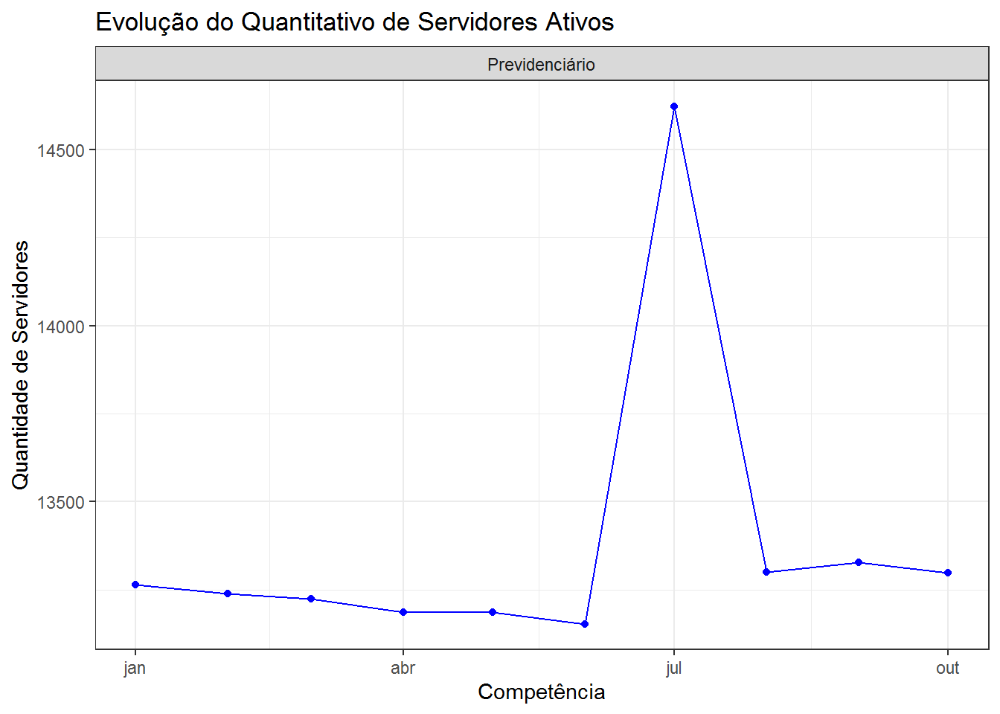
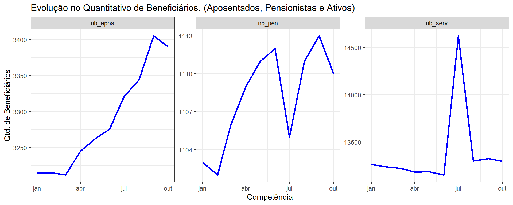
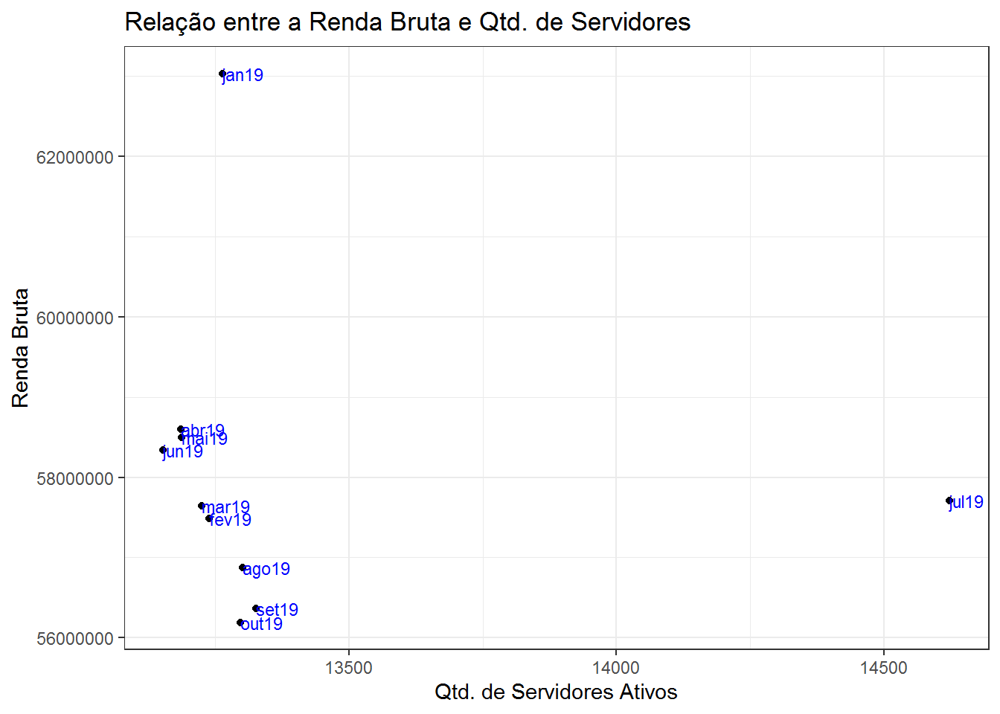
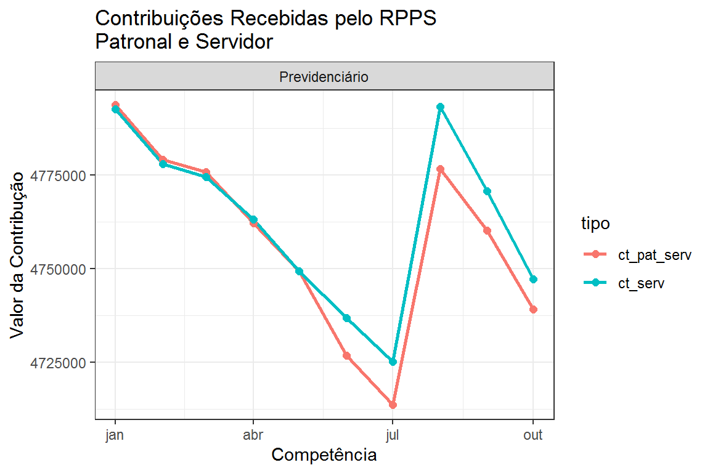
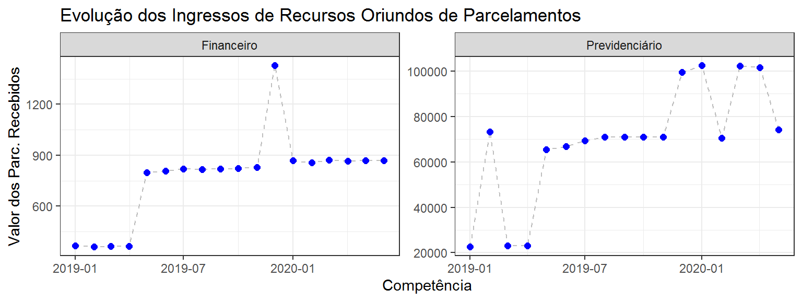

Capítulo 5 DIPR - Demonstrativo de Informações Previdenciárias e Repasses
O DIPR é o demonstrativo pelo qual o RPPS informa bimestralmente à SPREV o valor das bases de cálculo utilizadas para os repasses, os ingressos e dispêndios de recursos ocorridos em cada mês, incluindo os valores dos repasses das contribuições feitas pelo ente e beneficiários.
O RPPS deve encaminhar à SPREV, via CADPREV, o demonstrativo de cada bimestre até o último dia do mês seguinte ao do encerramento do bimestre.
A base de dados do DIPR é um dos principais arquivos disponibilizados pela SPREV, visto que possibilita um panorama das finanças do RPPS em termos de entrada e saída de recursos financeiros.
Cada arquivo contém os dados de um exercício para todos os RPPS brasileiros e estão disponíveis no site da SPrev os arquivos dos anos de 2014 em diante.
Este capítulo aborda as possibilidades de análise dos dados do DIPR relativos aos exercícios de 2019 e 2020.
Também é oportuno registrar que os nomes dos arquivos podem sofrer alterações de uma atualização para outra. Assim, pode ser que versões futuras dos arquivos de dados do DIPR tenham nomes diferentes dos que os apresentados neste documento.
5.1 Importação e pré-processamento dos dados
Como de costume, a primeira coisa a ser feita é a importação e o pré-processamento dos dados, que no presente caso serão dois arquivos. Um do ano de 2019 e outro do ano de 2020.
# Arquivos a serem importados
arquivos_dipr <- c("dados/rg-outros-dp-envio_atualizacao_de_ago_e-set_2020_extracao_em_20200928-2020.xlsx", "dados/rg-outros-dp-envio_atualizacao_de_ago_e-set_2020_extracao_em_20200929-2019.xlsx")
# Importação dos arquivos
dipr <- map_dfr(arquivos_dipr,
read_excel,
sheet = "diprResultadoPrevidenciario",
skip = 4,
col_names = FALSE)As planilhas possuem um cabeçalho contendo informações que não são úteis à análise e, dessa forma, a importação foi feita sem os nomes das variáveis.
Essa base de dados foi preparada pela SPREV para ser vista e impressa e não para ser consumida por máquina de forma automática, requisito dos dados abertos.
Para tornar os dados mais adequados para análise posterior, inicia-se a seguir o pré-processamento dos mesmos. Inicia-se por incluir o nome das variáveis:
names(dipr) <- c("ente", "uf", "competencia", "plano_segreg", "dt_info", "bc_pat_serv",
"bc_pat_serv_ug", "bc_pat_apo", "bc_pat_pen", "bc_serv", "bc_apo",
"bc_pen", "ct_pat_serv", "ct_pat_serv_ug", "ct_pat_apo", "ct_pat_pen",
"ct_serv", "ct_apo", "ct_pen", "deduc_pat", "deduc_pat_outros", "deduc_seg",
"deduc_seg_outros", "aportes_amortiz", "aportes_insufin", "aportes_despadm",
"aportes_pagtesouro", "aportes_outros", "parcelamentos", "bcug_pat", "bcug_serv",
"bcug_serv_afast", "bcug_apos", "bcug_pen", "ctug_pat", "ctug_serv", "ctug_serv_afast",
"ctug_apos", "ctug_pen", "rb_serv", "rb_apos", "rb_pen", "nb_serv", "nb_apos", "nb_pen",
"nb_dep", "ing_contr", "ing_aportes", "ing_parc", "ing_acres_leg", "ing_contr_cedlic",
"ing_comprev", "ing_aplicfin", "ing_ativos", "ing_outros", "desp_apo", "desp_pen_morte",
"desp_auxdoenca", "desp_salmater", "desp_salfam", "desp_auxreclu", "desp_decjud",
"desp_beneftesouro", "desp_despadm", "desp_invest", "desp_rest", "desp_comprev",
"desp_outras", "total_receita", "total_despesa", "resultado_final", "bcmil_pat_ativ",
"bcmil_ativos", "bcmil_reserva", "bcmil_pen", "ctmil_pat", "ctmil_ativos", "ctmil_reserva",
"ctmil_pen", "rbmil", "nbmil_ativos", "nbmil_reserva", "nbmil_pen", "nbmil_dep",
"ingmil_contr", "ingmil_aportes", "ingmil_outras", "despmil_reseva", "despmil_penmorte",
"despmil_outras", "resultado_final_mil")Como pode ser visto pela quantidade de nomes, esta é uma base de dados bem extensa, possuindo 91 variáveis.
Nos arquivos do DIPR, as variáveis estão agrupadas em blocos conforme mostrado a seguir e a escolha dos nomes das variáveis, na medida do pessível, tentou levar esse fato em consideração:
Bloco 0 - Identificação do DIPR (5 primeiras variáveis)
Bloco 1 - Bases de Cálculo das Contribuições Devidas, Relativas às Folhas do Ente (7 variáveis)
Bloco 2 - Contribuições Repassadas (7 variáveis)
Bloco 3 - Deduções (4 variáveis)
Bloco 4 - Aportes e Transferências de Recursos (5 variáveis)
Bloco 5 - Parcelamentos (1 variável)
Bloco 6 - Bases de Cálculo das Contribuições Devidas, Relativas à Folha da Unidade Gestora (5 variáveis)
Bloco 7 - Contribuições Arrecadadas pela Unidade Gestora (5 variáveis)
Bloco 8 - Remuneração Bruta - Somatório das Folhas do Ente da Unidade Gestora (3 variáveis)
Bloco 9 - Número de Beneficiários - Somatório das Folhas do Ente e da Unidade Gestora (4 variáveis)
Bloco 10 - Ingressos de Recursos (9 variáveis)
Bloco 11 - Utilização de Recursos (13 variáveis)
Bloco 12 - Resultado Final (3 variáveis)
Bloco 13 - Militares (20 variáveis)
Para tentar facilitar a identificação das variáveis em relação ao bloco a que pertencem, foram colocados prefixos nas mesmas conforme mostrado a seguir:
| Bloco | Prefixo | Bloco | Prefixo |
|---|---|---|---|
| 1 | bc_ |
8 | rb_ |
| 2 | ct_ |
9 | nb_ |
| 3 | deduc_ |
10 | ing_ |
| 4 | aportes_ |
11 | desp_ |
| 5 | parcelamentos |
12 | total_, resultado_final |
| 6 | bcug_ |
13 | ...mil_, resultado_final_mil |
| 7 | ctug_ |
No bloco 13, relativo à variáveis dos militares, os pontinhos devem ser substituídos por bc se for base de calculo, ct se for contribuição, etc.
Como se pode ver o volume de dados é bem expressivo. Apresenta-se a seguir os registros iniciais da base de dados.
# A tibble: 6 x 91
ente uf competencia plano_segreg dt_info bc_pat_serv bc_pat_serv_ug bc_pat_apo bc_pat_pen bc_serv bc_apo bc_pen ct_pat_serv ct_pat_serv_ug ct_pat_apo ct_pat_pen ct_serv
<chr> <chr> <chr> <chr> <chr> <chr> <chr> <chr> <chr> <chr> <chr> <chr> <chr> <chr> <chr> <chr> <chr>
1 Gove~ DF JAN/2020 Financeiro 31/03/~ 689.526.74~ <NA> <NA> <NA> 689.52~ <NA> <NA> 151.695.88~ <NA> <NA> <NA> 75.875~
2 Gove~ DF JAN/2020 Previdenciá~ 31/03/~ 8.471.156,~ <NA> <NA> <NA> 8.471.~ <NA> <NA> 1.863.654,~ <NA> <NA> <NA> 946.54~
3 Gove~ DF FEV/2020 Financeiro 31/03/~ 679.625.81~ <NA> <NA> <NA> 679.62~ <NA> <NA> 149.987.61~ <NA> <NA> <NA> 74.809~
4 Gove~ DF FEV/2020 Previdenciá~ 31/03/~ 9.130.970,~ <NA> <NA> <NA> 9.130.~ <NA> <NA> 2.001.443,~ <NA> <NA> <NA> 1.004.~
5 Gove~ DF MAR/2020 Financeiro 29/05/~ 679.315.56~ <NA> <NA> <NA> 679.31~ <NA> <NA> 149.667.65~ <NA> <NA> <NA> 74.739~
6 Gove~ DF MAR/2020 Previdenciá~ 29/05/~ 12.084.064~ <NA> <NA> <NA> 12.084~ <NA> <NA> 2.658.487,~ <NA> <NA> <NA> 1.329.~
# ... with 74 more variables: ct_apo <chr>, ct_pen <chr>, deduc_pat <chr>, deduc_pat_outros <chr>, deduc_seg <chr>, deduc_seg_outros <chr>, aportes_amortiz <chr>,
# aportes_insufin <chr>, aportes_despadm <chr>, aportes_pagtesouro <chr>, aportes_outros <chr>, parcelamentos <chr>, bcug_pat <chr>, bcug_serv <chr>, bcug_serv_afast <chr>,
# bcug_apos <chr>, bcug_pen <chr>, ctug_pat <chr>, ctug_serv <chr>, ctug_serv_afast <chr>, ctug_apos <chr>, ctug_pen <chr>, rb_serv <chr>, rb_apos <chr>, rb_pen <chr>,
# nb_serv <chr>, nb_apos <chr>, nb_pen <chr>, nb_dep <chr>, ing_contr <chr>, ing_aportes <chr>, ing_parc <chr>, ing_acres_leg <chr>, ing_contr_cedlic <chr>, ing_comprev <chr>,
# ing_aplicfin <chr>, ing_ativos <chr>, ing_outros <chr>, desp_apo <chr>, desp_pen_morte <chr>, desp_auxdoenca <chr>, desp_salmater <chr>, desp_salfam <chr>,
# desp_auxreclu <chr>, desp_decjud <chr>, desp_beneftesouro <chr>, desp_despadm <chr>, desp_invest <chr>, desp_rest <chr>, desp_comprev <chr>, desp_outras <chr>,
# total_receita <chr>, total_despesa <chr>, resultado_final <chr>, bcmil_pat_ativ <chr>, bcmil_ativos <chr>, bcmil_reserva <chr>, bcmil_pen <chr>, ctmil_pat <chr>,
# ctmil_ativos <chr>, ctmil_reserva <chr>, ctmil_pen <chr>, rbmil <chr>, nbmil_ativos <chr>, nbmil_reserva <chr>, nbmil_pen <chr>, nbmil_dep <chr>, ingmil_contr <chr>,
# ingmil_aportes <chr>, ingmil_outras <chr>, despmil_reseva <chr>, despmil_penmorte <chr>, despmil_outras <chr>, resultado_final_mil <chr>A seguir faz-se a limpeza da base com vistas a facilitar sua utilização posterior:
# Limpar o nome dos entes...
dipr$ente <- gsub("^Governo d[oea] |Prefeitura Municipal d[eoa] ", "", dipr$ente)
# Função auxiliar para converter valores para o formato numérico
convnum <- function(x){
x <- gsub("\\.", "", x)
x <- gsub(",", ".", x)
as.numeric(x)
}
# Conversão os dados para o formato numérico...
dipr[,-c(1:5)] <- sapply(dipr[,-c(1:5)], convnum)
# Converter a variável "competencia" e "dt_info" para o formato de data
dipr <- dipr %>%
mutate(competencia = dmy(paste("01", competencia, sep = "/")),
dt_info = dmy(dt_info)) Após a limpeza os dados estão prontos para uso.
# A tibble: 6 x 91
ente uf competencia plano_segreg dt_info bc_pat_serv bc_pat_serv_ug bc_pat_apo bc_pat_pen bc_serv bc_apo bc_pen ct_pat_serv ct_pat_serv_ug ct_pat_apo ct_pat_pen ct_serv
<chr> <chr> <date> <chr> <date> <dbl> <dbl> <dbl> <dbl> <dbl> <dbl> <dbl> <dbl> <dbl> <dbl> <dbl> <dbl>
1 Dist~ DF 2020-01-01 Financeiro 2020-03-31 689526743. NA NA NA 6.90e8 NA NA 151695883. NA NA NA 7.59e7
2 Dist~ DF 2020-01-01 Previdenciá~ 2020-03-31 8471156 NA NA NA 8.47e6 NA NA 1863654. NA NA NA 9.47e5
3 Dist~ DF 2020-02-01 Financeiro 2020-03-31 679625816. NA NA NA 6.80e8 NA NA 149987616. NA NA NA 7.48e7
4 Dist~ DF 2020-02-01 Previdenciá~ 2020-03-31 9130971. NA NA NA 9.13e6 NA NA 2001443. NA NA NA 1.00e6
5 Dist~ DF 2020-03-01 Financeiro 2020-05-29 679315569. NA NA NA 6.79e8 NA NA 149667652. NA NA NA 7.47e7
6 Dist~ DF 2020-03-01 Previdenciá~ 2020-05-29 12084064. NA NA NA 1.21e7 NA NA 2658487. NA NA NA 1.33e6
# ... with 74 more variables: ct_apo <dbl>, ct_pen <dbl>, deduc_pat <dbl>, deduc_pat_outros <dbl>, deduc_seg <dbl>, deduc_seg_outros <dbl>, aportes_amortiz <dbl>,
# aportes_insufin <dbl>, aportes_despadm <dbl>, aportes_pagtesouro <dbl>, aportes_outros <dbl>, parcelamentos <dbl>, bcug_pat <dbl>, bcug_serv <dbl>, bcug_serv_afast <dbl>,
# bcug_apos <dbl>, bcug_pen <dbl>, ctug_pat <dbl>, ctug_serv <dbl>, ctug_serv_afast <dbl>, ctug_apos <dbl>, ctug_pen <dbl>, rb_serv <dbl>, rb_apos <dbl>, rb_pen <dbl>,
# nb_serv <dbl>, nb_apos <dbl>, nb_pen <dbl>, nb_dep <dbl>, ing_contr <dbl>, ing_aportes <dbl>, ing_parc <dbl>, ing_acres_leg <dbl>, ing_contr_cedlic <dbl>, ing_comprev <dbl>,
# ing_aplicfin <dbl>, ing_ativos <dbl>, ing_outros <dbl>, desp_apo <dbl>, desp_pen_morte <dbl>, desp_auxdoenca <dbl>, desp_salmater <dbl>, desp_salfam <dbl>,
# desp_auxreclu <dbl>, desp_decjud <dbl>, desp_beneftesouro <dbl>, desp_despadm <dbl>, desp_invest <dbl>, desp_rest <dbl>, desp_comprev <dbl>, desp_outras <dbl>,
# total_receita <dbl>, total_despesa <dbl>, resultado_final <dbl>, bcmil_pat_ativ <dbl>, bcmil_ativos <dbl>, bcmil_reserva <dbl>, bcmil_pen <dbl>, ctmil_pat <dbl>,
# ctmil_ativos <dbl>, ctmil_reserva <dbl>, ctmil_pen <dbl>, rbmil <dbl>, nbmil_ativos <dbl>, nbmil_reserva <dbl>, nbmil_pen <dbl>, nbmil_dep <dbl>, ingmil_contr <dbl>,
# ingmil_aportes <dbl>, ingmil_outras <dbl>, despmil_reseva <dbl>, despmil_penmorte <dbl>, despmil_outras <dbl>, resultado_final_mil <dbl>5.2 Seleção do RPPS para análise
Como já comentado anteriormente, a base de dados contém informações para 91 variáveis para os planos financeiro e previdenciário quando o RPPS possui segregação de massas, mês a mês.
Usualmente a análise será restrita a um RPPS. Assim, a primeira coisa a ser feita é filtrar a base de dados para obter apenas os registros relativos ao RPPS que se deseja analisar e para fazer isso basta saber a sigla da UF e o nome do ente.
Ocorre que, com frequência, não se tem certeza de como o nome do ente está grafado na base de dados e, às vezes, nem se o RPPS possui dados na base. Uma dica, em caso de dúvida, é relacionar todos os entes de uma determinada UF ou utilizar parte do nome do ente para fazer uma pesquisa.
Por exemplo, suponha que o interesse esteja no RPPS de “campos do goitacazes”. Se houver dúvida quanto a grafia, pode-se pesquisar por “campo” da seguinte forma:
# Indique a sigla da UF do Ente que deseja pesquisar
UF <- "RJ"
pesquisa <- "campo"
dipr %>%
filter(uf == UF) %>%
pull(ente) %>%
unique() %>%
grep(pattern=pesquisa, x=., value=TRUE, ignore.case = TRUE)[1] "Campos dos Goytacazes"Com o nome do ente e a sigla da unidade da federação é possível aplicar o filtro de forma mais segura porque se sabe como o nome está grafado e se o RPPS tem dados na base. Se a base do DIPR contivesse o CNPJ do ente, essa variável poderia ser utilizada para a consulta.
# Seleção do RPPS
rpps <- 'Campos dos Goytacazes'
# Filtro
dipr_rpps <- dipr %>%
filter(uf == UF, ente == rpps) %>%
select_if(~!all(is.na(.))) # Descarta colunas que não tem valores.
head(dipr_rpps)# A tibble: 6 x 30
ente uf competencia plano_segreg dt_info bc_pat_serv bc_serv ct_pat_serv ct_serv deduc_pat parcelamentos bcug_apos bcug_pen ctug_apos ctug_pen rb_serv rb_apos rb_pen
<chr> <chr> <date> <chr> <date> <dbl> <dbl> <dbl> <dbl> <dbl> <dbl> <dbl> <dbl> <dbl> <dbl> <dbl> <dbl> <dbl>
1 Camp~ RJ 2019-01-01 Previdenciá~ 2020-01-31 43581927. 4.36e7 4793634. 4.79e6 1131041. 2168510. 1180180. 284584. 129820. 31304. 6.30e7 1.18e7 2.92e6
2 Camp~ RJ 2019-02-01 Previdenciá~ 2020-01-31 43449886. 4.34e7 4779109. 4.78e6 865335. 2178700. 1187832. 275434. 130661. 30298. 5.75e7 1.19e7 2.89e6
3 Camp~ RJ 2019-03-01 Previdenciá~ 2020-01-31 43419609. 4.34e7 4775779. 4.77e6 1247037 2196120. 1174924. 327148. 129242. 35986. 5.76e7 1.19e7 2.97e6
4 Camp~ RJ 2019-04-01 Previdenciá~ 2020-01-31 43282039. 4.33e7 4762166. 4.76e6 967924. 2206343. 1191363. 326282. 131050. 35891. 5.86e7 1.20e7 2.98e6
5 Camp~ RJ 2019-05-01 Previdenciá~ 2020-01-31 43175362. 4.32e7 4749289. 4.75e6 1310186. 2267594. 1214538. 307132. 133599. 33784. 5.85e7 1.21e7 2.97e6
6 Camp~ RJ 2019-06-01 Previdenciá~ 2020-01-31 43061980. 4.31e7 4726736. 4.74e6 1202305. 2294006. 1243650. 314969. 136801. 34647. 5.83e7 1.22e7 2.99e6
# ... with 12 more variables: nb_serv <dbl>, nb_apos <dbl>, nb_pen <dbl>, ing_contr <dbl>, ing_parc <dbl>, ing_aplicfin <dbl>, desp_apo <dbl>, desp_pen_morte <dbl>,
# desp_despadm <dbl>, total_receita <dbl>, total_despesa <dbl>, resultado_final <dbl>A base de dados dipr_rpps contém apenas os dados do RPPS selecionado. Quais os meses contemplados nessa base?
[1] "2019-01-01" "2019-02-01" "2019-03-01" "2019-04-01" "2019-05-01" "2019-06-01" "2019-07-01" "2019-08-01" "2019-09-01" "2019-10-01"Para o RPPS em análise existem na base apenas dados dos meses de janeiro a outubro de 2019. O RPPS não encaminhou nada de 2020.
5.3 Quantidade de Beneficiários
Estando com os dados prontos, uma análise possível é a da evolução temporal de uma ou mais variáveis para um determinado RPPS ou mesmo a elaboração de uma tabela com os dados de interesse para compor um relatório.
A análise gráfica é sempre interessante porque pode evidenciar mais rapidamente possíveis anomalias ou comportamentos não esperados dos dados.
Tomando cuidado com o fato de que em alguns RPPS tem-se os dados para o plano financeiro e previdenciário, pode-se começar por elaborar gráficos para visualizar a evolução de variáveis de interessse.
Para ilustrar como elaborar um gráfico de linhas, pode-se começar com as únicas varáveis não financeiras existentes no DAIR (excluindo as variáveis do bloco de identificação do DIPR), que são as que indicam o quantitativo de beneficiários.
Como já mencionado, as variáveis que informam o número de benefíciários possuem o prefixo nb_.
Caso o RPPS a ser analisado pertença a um Estado e a análie deva incluir os militares, deve-se considerar também as variáveis com prefixo nbmil_, o que não é o caso para o exemplo.
Os prefixos podem ajudar na seleção das variáveis de interesse. Exemplo:
# A tibble: 6 x 5
competencia plano_segreg nb_serv nb_apos nb_pen
<date> <chr> <dbl> <dbl> <dbl>
1 2019-01-01 Previdenciário 13264 3215 1103
2 2019-02-01 Previdenciário 13239 3215 1102
3 2019-03-01 Previdenciário 13225 3212 1106
4 2019-04-01 Previdenciário 13186 3245 1109
5 2019-05-01 Previdenciário 13187 3262 1111
6 2019-06-01 Previdenciário 13153 3276 1112Com o comando starts_with() é possível selecionar as variáveis que comecem com determinados caracteres.
O gráfico a seguir mostra a evolução da quantidade de servidores ativos (nb_serv):
dipr_rpps %>%
select(competencia, plano_segreg, starts_with("nb_")) %>%
ggplot(aes(x=competencia, y=nb_serv, group=1)) +
geom_line(color="blue") +
geom_point(color="blue") +
labs(title="Evolução do Quantitativo de Servidores Ativos",
y = "Quantidade de Servidores",
x = "Competência") +
facet_wrap(~ plano_segreg, scales = "free") +
theme_bw()
O gráfico mostra que em julho/2019 houve um pico no quantitativo de servidores devido, talvez, a um erro no preenchimento do DIPR.
Deve-se observar que a após o pico houve uma elevação no quantitativo de servidores. Aparentemente houve a realização de concurso público, fato que deve ser confirmado com dados de outras fontes.
E para ver as três variáveis no mesmo gráfico?
dipr_rpps %>%
select(competencia, plano_segreg, starts_with("nb_")) %>%
pivot_longer(cols = starts_with("nb_"),
names_to = "tipo_benef",
values_to = "n_benef") %>%
ggplot(aes(x=competencia, y=n_benef)) +
geom_line(size=1, color="blue") +
labs(title="Evolução no Quantitativo de Beneficiários. (Aposentados, Pensionistas e Ativos)",
y="Qtd. de Benefíciários",
x="Competência") +
facet_wrap(~ tipo_benef, scales = "free") +
theme_bw()
Os gráficos acima mostram tendências. E se o objetivo for examinar a relação entre variávis? Por exemplo, como é a relação entre a remuneração bruta dos servidores ativos e o quantitativo de servidores ativos?
O gráfico abaixo irá mostrar essa relação:
options(scipen = 999)
dipr_rpps %>%
ggplot(aes(x=nb_serv, y=rb_serv)) +
geom_point() +
geom_text(aes(label=format(competencia, "%b%y")),
color="blue",
size=3,
hjust=-0, vjust=0.5) +
labs(title="Relação entre a Renda Bruta e Qtd. de Servidores",
y="Renda Bruta",
x="Qtd. de Servidores Ativos") +
theme_bw()
Verifica-se dois pontos bem distanciados dos demais e à medida que o final do ano se aproxima, mesmo com mais servidores a remuneração bruta decresce.
Também pode ser de interesse simplesmente montar uma tabela com o quantitativo de beneficiários em cada mês.
dipr_rpps %>%
select(competencia, starts_with("nb_")) %>%
mutate(ic = nb_serv / (nb_apos + nb_pen)) %>%
qflextable()competencia | nb_serv | nb_apos | nb_pen | ic |
2019-01-01 | 13.264 | 3.215 | 1.103 | 3,1 |
2019-02-01 | 13.239 | 3.215 | 1.102 | 3,1 |
2019-03-01 | 13.225 | 3.212 | 1.106 | 3,1 |
2019-04-01 | 13.186 | 3.245 | 1.109 | 3,0 |
2019-05-01 | 13.187 | 3.262 | 1.111 | 3,0 |
2019-06-01 | 13.153 | 3.276 | 1.112 | 3,0 |
2019-07-01 | 14.623 | 3.321 | 1.105 | 3,3 |
2019-08-01 | 13.301 | 3.344 | 1.111 | 3,0 |
2019-09-01 | 13.327 | 3.405 | 1.113 | 2,9 |
2019-10-01 | 13.297 | 3.390 | 1.110 | 3,0 |
Com os dados disponíveis foi possível calcular e incluir na tabela o indicador de cobertura.
5.4 Manutenção dos pagamentos dos auxílios
Com a edição da EC 103/19, os entes devem ser os responsáveis pelo pagamento dos auxílios eventualmente previstos no plano de benefícios dos RPPS.
Os auxílios em questão são o auxílio doença, o salário maternidade, o salário família e o auxílio reclusão. Estes auxílios não devem mais ser pagos pelos RPPS.
Na base de dados estas despesas estão registradas nas seguintes variáveis: desp_auxdoenca, desp_salmater, desp_salfam e desp_auxreclu.
Uma questão de interesse é: quais RPPS ainda estão pagando os auxílios? Se a análisse estiver sendo feita para apenas um RPPS, como é o caso até agora, o teste pode ser feito da seguinte forma:
[1] FALSE FALSE FALSE FALSEO resultado indica que nenhum dos quatro auxílios consta da base dipr_rpps, indicando que essas despesas não constam do DIPR do RPPS em análise no período considerado. De fato, Campos do Goytacazes não encaminhou dados de 2020!
Para identificar todos os RPPS, uma estratégia pode ser criar uma nova coluna contendo o valor 1 se existir ao menos um valor não nulo nas variáveis de auxílio e o valor 0 caso contrário. Com isso, pode-se filtrar posteriormente os registros para os quais algum RPPS pagou ao menos um dos auxílios ao menos um dos meses de 2020.
Será criado um novo conjunto de dados com a identificação dos RPPS que pagaram auxílio em 2020:
# RPPS que pagaram auxílios
tab_auxilio <- dipr %>%
select(ente, uf, plano_segreg, competencia, desp_auxdoenca, desp_salmater, desp_salfam, desp_auxreclu) %>%
filter(competencia >= dmy(01012020)) %>%
rowwise() %>%
mutate(pagou_auxilio = ifelse(all(is.na(c(desp_auxdoenca, desp_salmater, desp_salfam, desp_auxreclu))), 0, 1)) %>%
filter(pagou_auxilio == 1)O conjunto de dados tab_auxilio contém a relação dos RPPS que pagaram ao menos um dos auxílios, ao menos um mês a partir de janeiro de 2020.
Quantos RPPS em cada UF pagaram auxílio em 2020?
tab_auxilio %>%
distinct(ente, uf) %>%
count(uf, name="n_rpps") %>%
arrange(desc(n_rpps)) %>%
qflextable()uf | n_rpps |
RS | 182 |
SP | 65 |
MT | 63 |
PR | 55 |
MG | 48 |
GO | 45 |
MS | 17 |
SC | 17 |
PE | 16 |
RJ | 16 |
BA | 14 |
AL | 10 |
RO | 10 |
CE | 8 |
PA | 7 |
AM | 6 |
ES | 6 |
RN | 6 |
TO | 6 |
MA | 3 |
PI | 3 |
RR | 2 |
AC | 1 |
PB | 1 |
SE | 1 |
Caso seja de interese identificar os 16 RPPS do ERJ que realizaram pagamentos de auxílios em 2020, basta aplicar um filtro:
ente | uf |
Conceição de Macabu | RJ |
Cordeiro | RJ |
Duas Barras | RJ |
Itaocara | RJ |
Macaé | RJ |
Maricá | RJ |
Mendes | RJ |
Miguel Pereira | RJ |
Paty do Alferes | RJ |
Petrópolis | RJ |
Rio das Ostras | RJ |
São Pedro da Aldeia | RJ |
Sapucaia | RJ |
Saquarema | RJ |
Silva Jardim | RJ |
Sumidouro | RJ |
Para inspecionar um RPPS em particular, por exemplo Petrópolis, é só filtrar:
ente | uf | plano_segreg | competencia | desp_auxdoenca | desp_salmater | desp_salfam | desp_auxreclu | pagou_auxilio |
Petrópolis | RJ | Financeiro | 2020-01-01 | 1.138 | 1 | |||
Petrópolis | RJ | Financeiro | 2020-02-01 | 1.138 | 1 | |||
Petrópolis | RJ | Financeiro | 2020-03-01 | 1.138 | 1 | |||
Petrópolis | RJ | Financeiro | 2020-04-01 | 1.423 | 1 | |||
Petrópolis | RJ | Financeiro | 2020-05-01 | 1.138 | 1 | |||
Petrópolis | RJ | Financeiro | 2020-06-01 | 1.138 | 1 | |||
Petrópolis | RJ | Financeiro | 2020-07-01 | 1.138 | 1 | |||
Petrópolis | RJ | Financeiro | 2020-08-01 | 1.138 | 1 |
No RPPS em análise (Petrópolis) houve pagamento de auxílio reclusão de Janeiro a Agosto de 2020.
5.5 Recebimento das contribuições
Uma verificação importante é se o RPPS está recendo com regularidade as contribuições previdenciárias. Mostar como realizar esse acompanhamento é o objetivo desta seção.
O conjunto de dados dipr_rpps contém as informações do RPPS de Campos dos Goytacazes no RJ.
# Função para testar se todos os valores de uma coluna estão faltando.
teste <- function(x){!all(is.na(x))}
tab_contrib <- dipr_rpps %>%
select(competencia, plano_segreg, starts_with("ct_")) %>%
select_if(teste) %>%
gather(key=tipo, value=contribuicao, -competencia, -plano_segreg) # substituir por 'pivot_longer()'
head(tab_contrib)# A tibble: 6 x 4
competencia plano_segreg tipo contribuicao
<date> <chr> <chr> <dbl>
1 2019-01-01 Previdenciário ct_pat_serv 4793634.
2 2019-02-01 Previdenciário ct_pat_serv 4779109.
3 2019-03-01 Previdenciário ct_pat_serv 4775779.
4 2019-04-01 Previdenciário ct_pat_serv 4762166.
5 2019-05-01 Previdenciário ct_pat_serv 4749289.
6 2019-06-01 Previdenciário ct_pat_serv 4726736.Obtidos os dados das contribuições, pode-se fazer uma inspeção visual via gráfico de linhas:
tab_contrib %>%
ggplot(aes(x=competencia, y=contribuicao, group=tipo, color=tipo)) +
geom_line(size=1) +
geom_point(size=2) +
facet_wrap(~ plano_segreg) +
labs(title="Contribuições Recebidas pelo RPPS\nPatronal e Servidor",
y="Valor da Contribução",
x="Competência") +
theme_bw()
O gráfico não evidencia interrupção de pagamento no período em que o RPPS encaminhou os dados à SPREV, ou seja, de janeiro a outubro de 2020. Mas a partir de junho a contribuição dos servidores passa a ser superior à contribuição patronal, talvez indicando um repasse inferior ao devido, o que deve ser objeto de análise mais aprofundada e talvez ajude a justificar a interrupção do encaminhamento dos DIPR após Out/19.
5.6 Recebimento dos parcelamentos
O capítulo 7 será dedicado à análise dos dados dos acordos de parcelamento de débitos. Não obstante, o DIPR fornece informações sobre os valores recebidos oriundos de parcelamentos de débitos. Estes dados estão disponíveis nas variáveis parcelamentos e ing_parc.
Da mesma forma que no tópico anterior o objetivo será tentar verificar se o RPPS vem recebendo os parcelamentos. Não é possivel apenas com esses dados verificar se todos os parcelamentos estão sendo pagos, se estão sendo pagos com os acréscimos legais, etc.
Como nem todos os RPPS possuem acordos de parcelamento de débitos, será necessário primeiro identificar os RPPS do ERJ, ou de qualquer outra UF, ou mesmo do Brasil, que tenham recebido recursos oriundos de parcelamentos no período.
Será criado um novo conjunto de dados tab_parcelamento contendo essas informações para os RPPS do ERJ:
tab_parcelamento <- dipr %>%
filter(uf == "RJ", !is.na(parcelamentos) | !is.na(ing_parc)) %>%
select(ente, competencia, plano_segreg, parcelamentos, ing_parc)
head(tab_parcelamento) # A tibble: 6 x 5
ente competencia plano_segreg parcelamentos ing_parc
<chr> <date> <chr> <dbl> <dbl>
1 Angra dos Reis 2020-01-01 Previdenciário 2139379. 2139379.
2 Angra dos Reis 2020-02-01 Previdenciário 2153116. 2153116.
3 Angra dos Reis 2020-03-01 Previdenciário 2167690. 2167690.
4 Angra dos Reis 2020-04-01 Previdenciário 415249. 415249.
5 Angra dos Reis 2020-05-01 Previdenciário 415912. 415912.
6 Angra dos Reis 2020-06-01 Previdenciário 416168. 416168.Os entes do ERJ que registraram no DIPR, no período em análise, o recebimento de receita de parcelamentos são os seguintes:
# A tibble: 58 x 1
ente
<chr>
1 Angra dos Reis
2 Araruama
3 Barra do Piraí
4 Bom Jardim
5 Cambuci
6 Carapebus
7 Cardoso Moreira
8 Carmo
9 Comendador Levy Gasparian
10 Conceição de Macabu
# ... with 48 more rowsTem-se 58 RPPS nessa situação, o que indica ser uma prática comum no ERJ não repassar recursos aos RPPS e formalizar acordos posteriormente.
Para verificar os dados de um RPPS específico basta aplicar um filtro na base de dados. Tomando-se o RPPS de Pinheiral como exemplo:
# A tibble: 35 x 5
ente competencia plano_segreg parcelamentos ing_parc
<chr> <date> <chr> <dbl> <dbl>
1 Pinheiral 2019-01-01 Financeiro 367. 367.
2 Pinheiral 2019-02-01 Financeiro 361. 361.
3 Pinheiral 2019-03-01 Financeiro 364. 364.
4 Pinheiral 2019-04-01 Financeiro 366. 366.
5 Pinheiral 2019-05-01 Financeiro 797. 797.
6 Pinheiral 2019-06-01 Financeiro 807. 807.
7 Pinheiral 2019-07-01 Financeiro 820. 820.
8 Pinheiral 2019-08-01 Financeiro 816. 816.
9 Pinheiral 2019-09-01 Financeiro 821. 821.
10 Pinheiral 2019-10-01 Financeiro 824. 824.
# ... with 25 more rowsUma análise gráfica para vericar se tudo está ok:
tab_parcelamento %>%
filter(ente == "Pinheiral") %>%
ggplot(aes(x=competencia, y=parcelamentos)) +
geom_line(color="grey", linetype = "dashed") +
geom_point(size=2, color="blue") +
labs(title="Evolução dos Ingressos de Recursos Oriundos de Parcelamentos",
y="Valor dos Parc. Recebidos",
x="Competência") +
facet_wrap(~ plano_segreg, scales = "free") +
theme_bw()
De um modo geral, os exemplos apresentados permitem a análise de qualquer das variáveis contidas na base de dados. À medida que o tempo permitir outras análises serão incluídas.